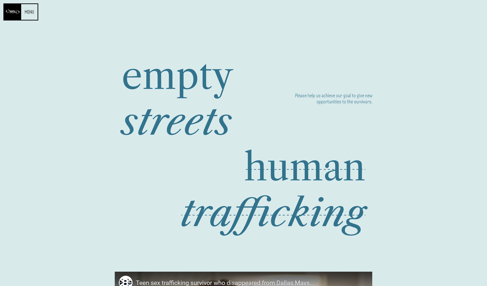

Home
EmptyStreets
Eliminating human trafficking
emptystreets.sparkplug.page Motivation
Empty Streets is a Houston-based, student-led organization that combats human trafficking in the #1 hotspot for human trafficking in the United States.
Technical Details
The only network calls the site makes is to a Google Sheet maintained by the nonprofit to track fundraising progress. All other content is static and manually created.
Challenges
Finding a coherent design language that both translated well to mobile devices and didn't clutter the screen - all while balancing a challenging blue/monotone color scheme - proved difficult but educational.